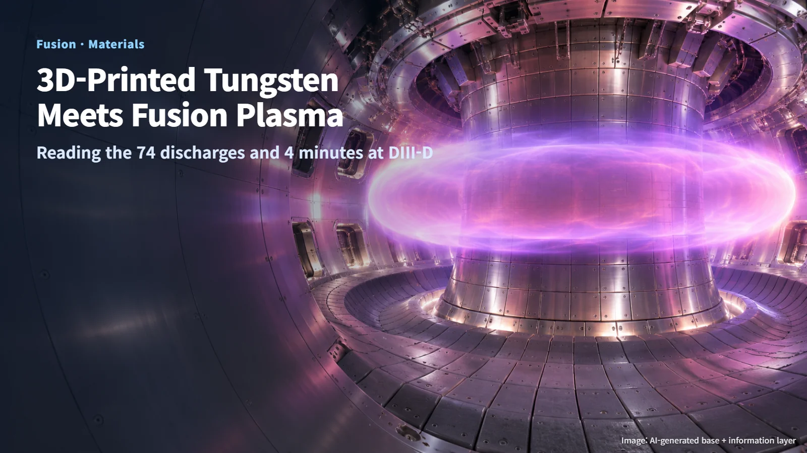
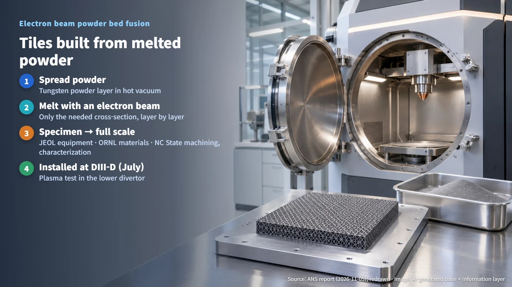
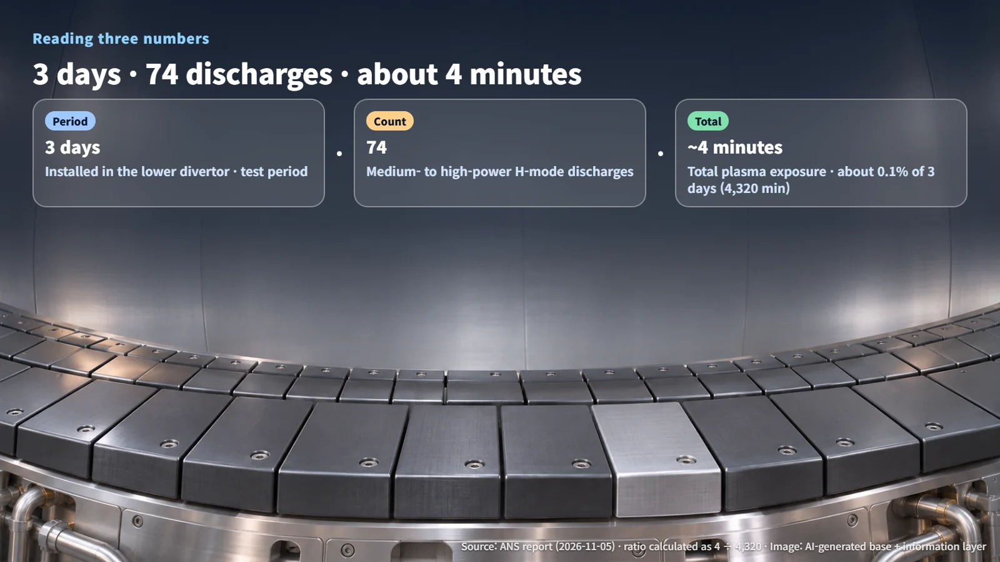

United States · Japan · Fusion
3D-Printed Tungsten Tiles Withstand Fusion Plasma: Reading the "74 Discharges" and "4 Minutes" of the DIII-D Test
Full-scale tungsten tiles made by electron beam powder bed fusion completed a DIII-D divertor test in sound condition.
Mention 3D printing and most people picture plastic prototypes. So what happens when metal parts made the same layer-by-layer way are mounted on the hottest wall inside a fusion device? Can they hold up?
On November 5, 2026, the American Nuclear Society (ANS) reported test results from DIII-D for full-scale 3D-printed tungsten tiles produced jointly by North Carolina State University (NC State), Oak Ridge National Laboratory (ORNL) and Japan's JEOL. In chronological order: the tiles were installed and tested in July, the originating research institutions announced the results on October 26, and ANS covered the story on November 5. This post looks at what the test showed, one number at a time.

The Hottest Wall in a Fusion Device: The Divertor and Tungsten
A tokamak is a device that confines plasma with a doughnut-shaped magnetic field, and it contains a special wall called the divertor. The divertor collects and absorbs the heat and particles escaping from the edge of the plasma, acting as a kind of exhaust. It is also where heat is most concentrated inside the machine. The October 20 post on ITER's divertor inner vertical target looked at this same region.
Tungsten is used as the surface material for this wall because its melting point is among the highest of any metal. Tungsten is generally hard and brittle, however, which makes it difficult to machine into complex shapes. That is why additive manufacturing, or 3D printing, which builds the desired shape layer by layer from the start, is drawing attention.
The floor of the machine, where tiles take the full flow of plasma heat and particles, was the stage for this test. The test is a case of checking how an additively manufactured tungsten component performs in the divertor environment of a real device.
Melting Powder Layer by Layer with an Electron Beam: From Test Specimens to Full-Scale Tiles
The research team used electron beam powder bed fusion. In a high-temperature vacuum environment, a thin layer of tungsten powder is spread out, an electron beam melts only the required areas, and the part is built up one layer at a time. Picture the electron beam sweeping across a bed of metal powder like a pen, drawing each cross-section of the tile in turn.
Each of the three institutions had a clear role. JEOL provided the large-scale equipment, ORNL supplied materials and fabrication support, and NC State handled precision machining and characterization. With this combination, the team scaled up from small test specimens to components sized for an actual device.

Scaling up comes down to one question: can the quality achieved in a small specimen be reproduced uniformly across an entire large component? Because the full-scale tiles were made to a standard fit for installation in a working machine, this result shows the manufacturing method moving a step from the laboratory-specimen stage toward the real-component stage.
Reading "3 Days, 74 Discharges, About 4 Minutes"
Three numbers appear in this test. Each counts something different, so reading them separately gives the most accurate picture.
- 3 days: the test period during which the tiles were installed in the lower divertor of DIII-D and directly exposed to plasma
- 74 discharges: the number of medium- to high-power H-mode discharges included in that period. H-mode is a high-performance operating state in which plasma confinement improves
- About 4 minutes: the total plasma exposure time, as described by the originating research institutions
Fusion experiments repeatedly create plasma for a short time and then shut it off; each of these pulses is called a discharge. The time the tiles actually faced plasma over those three days is therefore the sum of many short exposures, one per discharge. As a ratio: 3 days is 72 hours, or 4,320 minutes, so 4 ÷ 4,320 works out to about 0.1%.

What this number reveals is the character of the test. The tiles received repeated short exposures, including medium- to high-power discharges, and came through the test in sound condition under those conditions. The figure of 74 counts only medium- to high-power H-mode discharges, while about 4 minutes is the total of all exposure time, so each number is best read on its own terms.
Next Analyses and the Verification Still Ahead
The researchers plan to compare images and surface scans taken before and after exposure and, after radiological inspection, carry out detailed analysis. The analysis will cover erosion, surface changes and microstructure (the crystal structure inside the metal). The next stage is a close look at every fine change on the surface of the tested tiles.
Placing what this test confirmed next to what comes next makes the path clear. This time, the team obtained manufacturing-method validation data showing that the 3D-printed tungsten tiles maintained short-term integrity in a real plasma environment. The long service life and neutron irradiation durability that commercial fusion reactors require are the next tasks, to be addressed through repeated heat-load testing, long-term irradiation testing and verification of larger components.
The significance of this result, then, is that it adds an answer obtained in a real device to the question of how such components can be made. Once the follow-up analysis results are released, readers will also be able to see how much the surface changed.
About 4 minutes of exposure may sound brief, but a technology that began at the specimen stage has now been mounted on the wall of a working fusion device and completed its test. That is a clear milestone showing how far the manufacturing of fusion components has come.